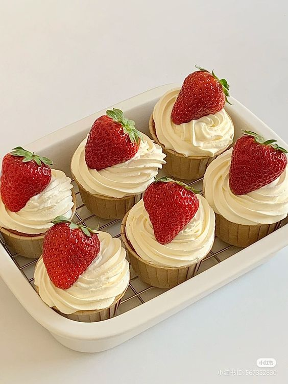

Strawberry Cupcakes

Description
Moist and fluffy vanilla cupcake topped with whipped cream
frosting and fresh strawberries. Delicious and simple!
Ingredients
Vanilla Cupcake
- 10 ounces of cake flour
- 9 ounces of granulated sugar
- 1/2 tsp of salt
- 2 tsp of baking powder
- 1/4 tsp of baking soda
- 2 large eggs at room temperature
- 4 ounces of vegetable oil
- 5 ounces of buttermilk at room temperature
- 4 ounces of softened unsalted butter
- 2 tsp of vanilla extract
Whipped Cream Frosting
- 1 pint heavy cream, well chilled
- 1 cup sifted icing sugar
- 1 tsp of vanilla
Strawberry garnish
- 1 quart of fresh strawberries
- 3 tablespoons of apricot marmalade
Steps
Making the cupcakes
-
Preheat the oven to 350ºF and line two cupcake
pans with paper liners.
-
Combine the vanilla and buttermilk in a separate
measuring cup and set it aside.
-
Next, add the eggs and oil to a separate bowl
then whisk and set them aside.
-
Add the cake flour, sugar, salt, baking powder, and
baking soda to the bowl of your stand mixer with the
paddle attachment. You can use a large bowl and an
electric mixer if you don’t have a stand mixer, just
mix for longer.
-
Then add the softened butter to the rest of the dry
ingredients and mix on low until the mixture resembles
a sandy texture. Depending on how soft your butter is,
this might take a minute or two.
-
Pour the milk mixture into your dry ingredients and
increase the speed to medium (speed 4 on a KitchenAid,
speed 2 on a Bosch). Mix for 1 ½ minutes to develop
the fluffy structure of the cupcake. The batter will
go from being yellow to a fluffy white.
-
Slowly add your egg mixture in three parts and mix
on low until it's fully combined.
-
Fill your liners ⅔ of the way full with the cupcake batter.
I use my kitchen scale to measure out 1.5 ounces of batter
per cupcake.
-
Bake the cupcakes for 15-20 minutes or until they are
just starting to turn golden brown and the center of
the cupcake springs back when you lightly touch it. I
rotate my cupcakes halfway through baking for even
browning. If you’re making mini cupcakes, bake for
less time.
-
Let your cupcakes cool in the pans for five minutes,
then move them to a cooling rack to cool completely.
Making the whipped cream frosting
-
Using both a chilled bowl and chilled beaters,
beat the cream until frothy.
-
Add the icing sugar and vanilla gradually while
beating.
-
Whip until light and a thick enough consistency
to spread as an icing.
-
Place into a piping bag and pipe frosting onto
the cooled vanilla cupcakes.
Adding the strawberry garnish
-
Wash and draw strawberries.
-
Place strawberries on top of frosted vanilla
cupcakes. Brush with apricot marmalade. This
adds a golden shine to the fruit.
Credit
All credit for the recipe goes to
Sugar Geek Recipes
and
Food.com